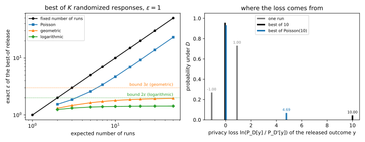
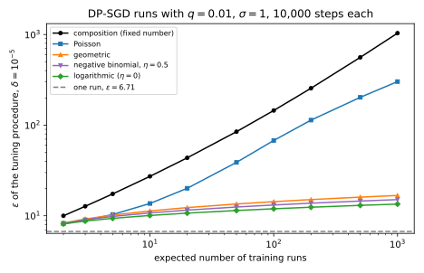
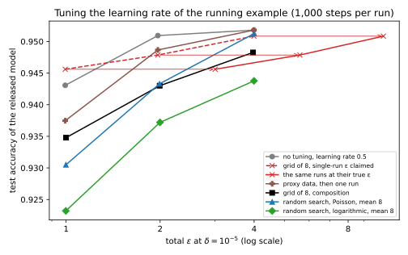

38 Hyperparameter tuning and private selection
38.1 Why this matters
The previous chapter proved a guarantee for one training run. Stochastic gradient descent (SGD) with per-example clipping and Gaussian noise, run once with a fixed step size, clipping norm, batch size and number of steps, satisfies differential privacy (DP) with the \((\varepsilon, \delta)\) that the accountant reports; this algorithm is DP-SGD. Nobody trains once. A practitioner tries a grid of step sizes, perhaps several clipping norms and architectures, scores each trained model on a validation set, and ships the best one. The validation set and the training set are private data, and every run touched them. How much does the search leak, and how do you pay for it honestly?
The question has a sharp answer, and it is not “nothing” and not always “the sum of all runs”. Releasing the best of \(k\) private runs can cost exactly \(k\) times one run: there are mechanisms for which the best-of-\(k\) release is no better than releasing all \(k\) runs. That is what composition, the bound that adds up the costs of all runs in Rényi differential privacy (RDP), charges anyway, and for a grid of 10 DP-SGD runs of the running example it turns \(\varepsilon = 6.71\) into 27.23. But a small change to the procedure changes the answer completely. If the number of runs is random, drawn from a suitable distribution before the search starts, the best-of release costs a constant factor (two or three times one run for pure DP) plus a term that grows only with the logarithm of the expected number of runs. For 10 runs in expectation, the cost falls from 27.23 to between 10.08 and 13.67 depending on the distribution, and for 1,000 runs from 1,035.93 to 13.46.
38.1.1 The one idea: the release is a function of every run, but a random number of runs hides which ones
The model you ship was chosen by comparing all the runs, so it is a function of all of them, and post-processing says its privacy is at most that of all the runs together. That is the composition bound. It can be tight because a fixed number of runs gives the adversary a sharp event to test for: “every one of the \(k\) runs came out badly”, whose probability multiplies \(k\) per-run likelihood ratios together. A random number of runs blurs that event. If \(K\) is random, the adversary does not know how many runs failed, and the event “all runs failed” is mostly explained by “there were few runs” rather than by the data. The mathematics of this is the generating function \(\mathbb E[x^K]\) of the number of runs, which turns “the best of \(K\) draws” into a formula, and the right choice of its distribution trades a slightly worse search for a much cheaper guarantee.
Table 38.1 lists the results and where each is used.
| Result | Where it is used |
|---|---|
| The best of \(k\) private runs can cost \(k\) runs | Why tuning must be accounted for; the common reporting bug |
| Composition: \(k\) runs cost \(k\) times the RDP curve | The baseline; small grids |
| Random stopping: the best of a geometric number of runs is \(3\varepsilon\)-DP | Pure-DP candidates; the idea behind everything that follows |
| Rényi bounds for a random number of runs (Poisson, truncated negative binomial) | Tuning DP-SGD with sublinear cost |
| Selecting by a noisy validation score | Choosing among fixed candidates; protecting the validation set |
| Tuning the running example, and what to report | Every private training project; Choosing ε and Auditing |
Notation. One run is a randomized algorithm \(Q\) that trains a model on the private data with hyperparameters drawn from a fixed set of candidates, and outputs the model together with its score, a number used to rank runs, such as a validation accuracy. The outputs of \(Q\) are totally ordered by score, so “the best” is well defined. \(Q(D)\) also denotes the distribution of one run’s output on dataset \(D\), and \(D \simeq D'\) are neighbours. \(K\) is the number of runs, fixed (\(K = k\)) or random, and \(f(x) = \mathbb E[x^K]\) its generating function. The best-of-\(K\) algorithm \(A\) draws \(K\), runs \(Q\) independently \(K\) times, and releases the best output. \(\varepsilon(\lambda)\) is an RDP curve at order \(\lambda\) (the papers this chapter follows write \(\lambda\) for the order, and so does this chapter), \(\varepsilon_A\) the curve of \(A\), and \(\gamma\), \(\eta\), \(\mu\) parameters of distributions of \(K\). The running example is that of DP-SGD: a network with 3,329 weights trained on \(n = 10{,}000\) records, sampling rate \(q = 0.01\), clipping norm \(C = 0.5\), \(\delta = 10^{-5}\).
How to read this chapter. The toolkit has the two facts every derivation uses, post-processing and the distribution of a maximum. Section 38.3 shows why tuning is not free, and Section 38.4 what the obvious fix costs. Section 38.5 is the key idea, in its simplest form, and Section 38.6 its version for DP-SGD; read the statements and the examples first, the derivations on a second pass. Section 38.7 covers the classical selection mechanisms, Section 38.8 runs everything on the running example, and Section 38.9 says what to do and what to report.
38.2 Toolkit: four facts every derivation uses
38.2.1 Fact 1 — RDP curves add, and convert to \((\varepsilon, \delta)\)
A mechanism \(M\) satisfies \((\lambda, \varepsilon(\lambda))\)-Rényi differential privacy if, for all neighbours \(D \simeq D'\), the Rényi divergence of order \(\lambda > 1\) between its output distributions is at most \(\varepsilon(\lambda)\): \[D_\lambda\big(M(D)\,\|\,M(D')\big) = \frac{1}{\lambda - 1}\ln\sum_y P_D[y]^\lambda P_{D'}[y]^{1 - \lambda} \le \varepsilon(\lambda), \tag{38.1}\] where \(P_D[y]\) is the probability that \(M(D)\) outputs \(y\). The sum is the average of the likelihood ratio \(P_D[y]/P_{D'}[y]\) raised to the power \(\lambda - 1\), averaged over outputs drawn from \(D\); large orders weight the rare, large ratios more. As \(\lambda \to \infty\) the divergence becomes the largest log ratio, so pure \(\varepsilon\)-DP is the point \(\lambda = \infty\). Three properties are used here (Rényi differential privacy). Running mechanisms in sequence, even adaptively, adds their curves. The divergence grows with the order, so a bound at order \(\lambda_2\) also holds at every \(\lambda_1 < \lambda_2\). And a curve converts to \((\varepsilon, \delta)\)-DP at the best order, \[\varepsilon = \min_\lambda\Big[\varepsilon(\lambda) + \ln\frac{\lambda - 1}{\lambda} - \frac{\ln\delta + \ln\lambda}{\lambda - 1}\Big], \tag{38.2}\] or, read the other way, \((\lambda, \varepsilon(\lambda))\)-RDP gives \((\hat\varepsilon, \hat\delta)\)-DP for every \(\hat\varepsilon\) with \(\hat\delta = e^{(\lambda - 1)(\varepsilon(\lambda) - \hat\varepsilon)}(1 - 1/\lambda)^{\lambda - 1}/\lambda\) (From RDP to (ε, δ)). DP-SGD with \(q = 0.01\), \(\sigma = 1\) and 10,000 steps has \(\varepsilon = 6.71\) at \(\delta = 10^{-5}\) by this conversion.
38.2.2 Fact 2 — Post-processing, and why “the best” is a post-processing of all runs
A computation that uses only a private output, and not the data, is as private as that output (Post-processing, group privacy and composition). The best of \(k\) runs is computed from the \(k\) outputs alone: compare their scores and keep the winner. So the best-of-\(k\) release is a post-processing of the \(k\) runs, and it is at least as private as releasing all of them, which by composition costs \(k\) times one run. The question of this chapter is whether it can be more private than that. Post-processing never makes things worse, but it does not promise to make them better.
38.2.3 Fact 3 — The best of \(K\) draws, and the generating function
Draw an output \(Y\) from a distribution \(Q\) on outcomes ordered from best to worst. The best of \(k\) independent draws is no better than \(y\) exactly when every draw is no better than \(y\), so \[P[\text{best of } k \preceq y] = Q(\preceq y)^k, \tag{38.3}\] where \(Q(\preceq y)\) is the probability that one draw is no better than \(y\) and \(Q(\prec y)\) the probability that it is strictly worse. The best is exactly \(y\) when all draws are no better than \(y\) but not all are strictly worse: \(Q(\preceq y)^k - Q(\prec y)^k\). Now let the number of draws \(K\) be random, independent of the draws. Averaging over \(K\) replaces \(x^k\) by \(\mathbb E[x^K]\), which is the generating function of \(K\), written \(f(x) = \sum_k P[K = k]\,x^k\). So \[P[A = y] = f\big(Q(\preceq y)\big) - f\big(Q(\prec y)\big). \tag{38.4}\] A fixed \(K = k\) has \(f(x) = x^k\); a Poisson number of runs with mean \(\mu\) has \(f(x) = e^{\mu(x - 1)}\); a geometric number on \(\{1, 2, \dots\}\), \(P[K = k] = \gamma(1 - \gamma)^{k - 1}\), has \(f(x) = \gamma x/(1 - (1 - \gamma)x)\), by summing the geometric series.
A die. The best of two rolls of a fair die is a 6 unless both rolls are below 6: \(1 - (5/6)^2 = 11/36 = 0.3056\). In the form of Equation 38.4 with outcome \(y = 6\) the best, \(Q(\preceq 6) = 1\) and \(Q(\prec 6) = 5/6\), so \(P = 1^2 - (5/6)^2\). If instead you roll once or twice with probability \(\frac12\) each, \(f(x) = \frac12x + \frac12x^2\) and \(P[\text{best} = 6] = f(1) - f(5/6) = 1 - \frac12\cdot\frac56 - \frac12\cdot\frac{25}{36} = 17/72 = 0.2361\), the average of the one-roll answer \(1/6\) and the two-roll answer \(11/36\).
38.2.4 Fact 4 — Disjoint parts of the data cost the larger of their costs
Suppose a dataset is split into two disjoint parts, a training set and a validation set, and each record lives in exactly one of them. An algorithm that is \(\varepsilon_1\)-DP in the training records (with the validation set fixed) and \(\varepsilon_2\)-DP in the validation records (with the training set fixed) is \(\max(\varepsilon_1, \varepsilon_2)\)-DP for neighbours that add or remove one record anywhere, because a pair of neighbours differs in one record, which sits in one part only. The same holds order by order for RDP curves: the curve is the pointwise maximum. This is the idea of parallel composition, and it is why a held-out validation set does not add its cost to training’s cost: it adds its own cost only where it is larger.
38.3 Best of k is k times worse
38.3.1 Context
The intuitive argument for ignoring tuning goes: the release is one model, chosen among a handful by one comparison, and a choice among eight step sizes carries at most three bits. That argument is wrong in two ways. The released model is not the choice; it is a whole private run, picked because of how it came out. And the comparison is a function of every run. How bad can it be?
38.3.2 Statement
Let one run be randomized response on two outcomes, “good” and “bad” (best first). On \(D\) the run comes out good with probability \(\frac{1}{1 + e^\varepsilon}\), and on its neighbour \(D'\) with probability \(\frac{e^\varepsilon}{1 + e^\varepsilon}\). One run is exactly \(\varepsilon\)-DP. Releasing the best of \(k\) runs is exactly \(k\varepsilon\)-DP: \[\frac{P_D[\text{best of } k \text{ is bad}]}{P_{D'}[\text{best of } k \text{ is bad}]} = \frac{\big(e^\varepsilon/(1 + e^\varepsilon)\big)^k}{\big(1/(1 + e^\varepsilon)\big)^k} = e^{k\varepsilon}. \tag{38.5}\] In RDP, Papernot & Steinke (2022, Proposition 17) show that the same release has \(D_\lambda \ge k\varepsilon - k\ln(1 + e^{-\varepsilon})/(\lambda - 1)\), so at large orders it also costs about \(k\) times one run.
38.3.3 Derivation
- Best of \(k\) is bad only if every run is bad. By Fact 3 with outcome “bad” the worst, \(P[\text{best is bad}] = Q(\text{bad})^k\).
- Each run’s ratio is \(e^\varepsilon\). \(Q_D(\text{bad}) = e^\varepsilon/(1 + e^\varepsilon)\) and \(Q_{D'}(\text{bad}) = 1/(1 + e^\varepsilon)\), a ratio of \(e^\varepsilon\).
- The \(k\) ratios multiply. Raising both to the power \(k\) gives Equation 38.5. The other outcome, “good”, has the ratio \((1 - Q_D(\text{bad})^k)/(1 - Q_{D'}(\text{bad})^k)\), which is between \(e^{-\varepsilon}\) and 1, so the largest log ratio over outcomes is \(k\varepsilon\).
- The Rényi version. Keep only the “bad” term in the sum of Fact 1: \(e^{(\lambda - 1)D_\lambda} \ge P_D[\text{bad}]^\lambda P_{D'}[\text{bad}]^{1 - \lambda} = e^{k\varepsilon\lambda}(1 + e^\varepsilon)^{-k}\), which is \((e^{k\varepsilon})^\lambda\) times \(P_{D'}[\text{bad}]\). Taking logarithms and dividing by \(\lambda - 1\) gives \(D_\lambda \ge (k\varepsilon\lambda - k\ln(1 + e^\varepsilon))/(\lambda - 1) = k\varepsilon - k\ln(1 + e^{-\varepsilon})/(\lambda - 1)\), using \(\ln(1 + e^\varepsilon) = \varepsilon + \ln(1 + e^{-\varepsilon})\).
38.3.4 Interpretation
Where the loss comes from. The whole loss sits on one event: every run failed. Its probability is small on both datasets, but its ratio is the product of \(k\) per-run ratios, because the runs are independent and the event requires all of them. Figure 38.1 (right) shows the privacy loss distribution for \(\varepsilon = 1\): one run has losses \(\pm1\); the best of 10 has a loss of \(-0.0446\) with probability 0.9564 and a loss of 10 with probability 0.0436. A test that looks for “the released model is bad” detects membership with a likelihood ratio of \(e^{10}\) whenever it fires.
This is not an artefact of a contrived mechanism. A DP-SGD run that sometimes diverges, a learning rate that sometimes produces a useless model, a candidate that rarely clears a threshold: each is a run with a “bad” outcome whose probability depends a little on the data. Best-of-\(k\) multiplies those small dependences. The example is extreme because it puts all of each run’s privacy loss on a single binary outcome. A particular DP-SGD search may leak much less, but no analysis that knows only each run’s guarantee can promise it, so the general bound for a fixed \(k\) is composition, which grows linearly (Section 38.4).
The bound for a fixed \(k\) is tight, so the procedure must change. Composition says best-of-\(k\) costs at most \(k\varepsilon\), and Equation 38.5 says some mechanism attains it. No better analysis of “the best of exactly \(k\) runs” exists for all mechanisms. A better guarantee needs a different procedure, and the next sections change one thing: the number of runs.
Non-private tuning leaks too. If you tune without any noise and then train privately once with the chosen hyperparameters, the hyperparameters are a non-private function of the data, and the final run’s \(\varepsilon\) does not cover them. Papernot & Steinke (2022, Section 2) build a support vector machine whose best regularization weight changes when a few outliers are added, so the chosen value reveals whether the outliers were in the training set, a membership inference through a single number.

38.3.5 Example: the numbers for \(\varepsilon = 1\)
With \(\varepsilon = 1\) a run is good with probability 0.2689 on \(D\) and 0.7311 on \(D'\). The script computes the best-of-\(k\) distributions exactly. The largest log ratio is 2.0000 for \(k = 2\), 3.0000 for \(k = 3\) and 10.0000 for \(k = 10\), exactly \(k\varepsilon\). At order \(\lambda = 2\), the Rényi divergence of the best of 10 is 6.8683, between the lower bound of step 4, 6.8674, and composition’s upper bound, ten times one run’s 0.7353, which is 7.3533. Composition overstates the exact value by 7%; at order 2 it is nearly tight, as at order \(\infty\).
38.3.6 Check yourself
- Releasing only the index of the best run, not the trained model, would it fix Equation 38.5? (No. In the example the output is “good” or “bad”, and the index of the best run carries the same event: if all runs are bad, every index is a bad run, and the chosen one reveals it. What matters is that the release depends on every run.)
- Suppose each run is \(\varepsilon\)-DP and you release the best of \(k\) runs together with all \(k\) scores. What is the cost? (At most \(k\varepsilon\) by composition, the same as the best alone in the worst case; releasing more does not cost more here because the best of \(k\) already attains the bound.)
38.4 Paying by composition
38.4.1 Context
The safe answer is to charge for every run. What does it cost on the running example, and how much more noise does each run need to keep the total fixed?
38.4.2 Statement
If each of \(k\) runs has RDP curve \(\varepsilon(\lambda)\), releasing anything computed from all of them, in particular the best, has curve at most \[\varepsilon_A(\lambda) \le k\,\varepsilon(\lambda), \tag{38.6}\] converted to \((\varepsilon, \delta)\) by Equation 38.2. For DP-SGD, \(k\) runs of \(T\) steps at noise multiplier \(\sigma\) cost the same as one run of \(kT\) steps, so keeping the total at a target \(\varepsilon\) means choosing \(\sigma\) for \(kT\) steps.
38.4.3 Derivation
- The release is a post-processing of the \(k\) runs (Fact 2).
- The \(k\) runs compose. Each run uses fresh randomness, and RDP curves add (Fact 1), so their joint output has curve \(k\varepsilon(\lambda)\). This holds even if the candidates are chosen adaptively, each after seeing the earlier results, since RDP composition covers adaptive sequences.
- DP-SGD. One run of \(T\) steps has curve \(T\varepsilon_{q,\sigma}(\lambda)\), where \(\varepsilon_{q,\sigma}\) is one subsampled Gaussian step. \(k\) runs give \(kT\varepsilon_{q,\sigma}(\lambda)\), the curve of one run of \(kT\) steps.
38.4.4 Interpretation
Composition is cheaper than \(k\varepsilon\), but still grows like \(k\). In \((\varepsilon, \delta)\) terms, \(k\) runs cost less than \(k\) times one run’s \(\varepsilon\), because the conversion of Equation 38.2 pays its \(\ln(1/\delta)\) term once, and because adding curves behaves like advanced composition, roughly \(\sqrt k\) at small \(\varepsilon\). On the running example, Table 38.2, 10 runs cost 4.06 times one run, not 10. But the curve grows linearly, and so does \(\varepsilon\) once the budget is large: from 30 to 100 runs, \(\varepsilon\) grows by a factor 2.5.
Raising the noise is the honest way to keep the budget. To keep the total at \(\varepsilon = 6.71\), each of 10 runs needs \(\sigma = 2.45\) instead of 1. DP-SGD showed what that costs on this task: more noise per step means fewer useful steps, and accuracy falls steeply below some budget.
When composition is the right tool. For a handful of candidates, two or three, composition costs little more than the alternatives below and needs no change to the procedure. Figure 38.2 shows that the random-\(K\) methods only pull away from composition from a few runs on.
38.4.5 Example: the running example’s grid
Table 38.2 takes the running example, \(q = 0.01\), \(\sigma = 1\), 10,000 steps, one run \(\varepsilon = 6.71\) at \(\delta = 10^{-5}\), and composes \(k\) runs. The values for 10 and 100 runs are those Choosing an accountant reported.
| Runs \(k\) | 1 | 3 | 10 | 30 | 100 |
|---|---|---|---|---|---|
| \(\varepsilon\) of \(k\) runs at \(\sigma = 1\) | 6.71 | 12.73 | 27.23 | 58.25 | 145.17 |
| Ratio to one run | 1.00 | 1.90 | 4.06 | 8.68 | 21.63 |
| \(\sigma\) per run for a total of 6.71 | 1 | 1.46 | 2.45 | 4.12 | 7.44 |
38.4.6 Check yourself
- Why does \(k\) runs of \(T\) steps cost exactly as much as one run of \(kT\) steps, if the runs start from different initializations? (The accountant does not look at the weights. Each step costs \(\varepsilon_{q,\sigma}(\lambda)\) whatever it is applied to, and curves add.)
- Your team ran 30 configurations, each at \(\varepsilon = 6.71\), and reports 6.71. What does composition say the release costs? (58.25. The best-of release can be at most that; Section 38.3 shows that without more structure no smaller number is guaranteed.)
38.5 Random stopping: the best of a geometric number of runs
38.5.1 Context
Liu & Talwar (2019) asked whether the best of many \(\varepsilon\)-DP runs can cost a constant multiple of \(\varepsilon\), independent of how many runs are made. They found that it can, with one change: after each run, flip a coin and stop with probability \(\gamma\). The number of runs is then geometric with mean \(1/\gamma\), and releasing the best run seen is \(3\varepsilon\)-DP whatever \(\gamma\) is.
38.5.2 Statement
Algorithm (random stopping). Repeat: run \(Q\) on the data and keep its output; with probability \(\gamma\), stop and release the best output kept so far.
If \(Q\) is \(\varepsilon\)-DP, the release is \(3\varepsilon\)-DP (Liu & Talwar 2019, Theorem 3.2). Its output distribution is explicit: for an outcome \(y\) with probability \(p\) under one run, \(p_>\) the probability that one run is strictly better than \(y\) and \(p_\ge = p_> + p\) the probability that it is at least as good, \[P[A = y] = \frac{\gamma\,p}{\big(\gamma + (1 - \gamma)p_>\big)\big(\gamma + (1 - \gamma)p_\ge\big)}. \tag{38.7}\] Its utility: for any fraction \(\pi\), the release falls below the top \(\pi\)-quantile of one run’s score with probability \[P[\text{miss}] = \frac{\gamma(1 - \pi)}{\gamma + (1 - \gamma)\pi} \le \frac{\gamma}{\pi}. \tag{38.8}\]
38.5.3 Derivation
The idea: the probability of each output is a ratio built from three probabilities of one run, \(p\), \(p_>\) and \(p_\ge\). Each moves by at most \(e^\varepsilon\) between neighbours, and the parameter \(\gamma\) enters in a way that cannot amplify those moves.
- The number of runs. The algorithm stops after run \(j\) with probability \(\gamma(1 - \gamma)^{j - 1}\): it continued \(j - 1\) times and stopped once. So \(K\) is geometric with mean \(1/\gamma\) and generating function \(f(x) = \gamma x/(1 - (1 - \gamma)x)\) (Fact 3).
- Apply Equation 38.4. One run is no better than \(y\) with probability \(1 - p_>\) and strictly worse with probability \(1 - p_\ge\). So \(P[A = y] = f(1 - p_>) - f(1 - p_\ge)\). Since \(1 - (1 - \gamma)(1 - p_>) = \gamma + (1 - \gamma)p_>\), this is \[\frac{\gamma(1 - p_>)}{\gamma + (1 - \gamma)p_>} - \frac{\gamma(1 - p_\ge)}{\gamma + (1 - \gamma)p_\ge}. \tag{38.9}\]
- Simplify. Over the common denominator, the numerator is \(\gamma\) times \((1 - p_>)(\gamma + (1 - \gamma)p_\ge) - (1 - p_\ge)(\gamma + (1 - \gamma)p_>)\). Expanding, the terms with \(\gamma\) give \(\gamma(p_\ge - p_>) = \gamma p\), and the terms with \(1 - \gamma\) give \((1 - \gamma)(p_\ge - p_>p_\ge - p_> + p_\ge p_>) = (1 - \gamma)p\). Their sum is \(p\), which gives Equation 38.7.
- Bound each factor. Write primes for the same quantities on \(D'\). Each of \(p\), \(p_>\) and \(p_\ge\) is the probability of an event about one run’s output, so \(\varepsilon\)-DP of \(Q\) gives \(p \le e^\varepsilon p'\), \(p'_> \le e^\varepsilon p_>\) and \(p'_\ge \le e^\varepsilon p_\ge\). The first bounds the numerator ratio. For the denominators, \(\gamma + (1 - \gamma)p'_> \le e^\varepsilon\big(\gamma + (1 - \gamma)p_>\big)\), because \(\gamma \le e^\varepsilon\gamma\) and \(p'_> \le e^\varepsilon p_>\); the same for \(p_\ge\).
- Multiply. \(P[A(D) = y]/P[A(D') = y] = \frac{p}{p'}\cdot\frac{\gamma + (1 - \gamma)p'_>}{\gamma + (1 - \gamma)p_>}\cdot\frac{\gamma + (1 - \gamma)p'_\ge}{\gamma + (1 - \gamma)p_\ge} \le e^{3\varepsilon}\). This holds for every outcome, so the release is \(3\varepsilon\)-DP.
- Utility. The release is below the top \(\pi\)-quantile only if every run is: \(\sum_j\gamma(1 - \gamma)^{j - 1}(1 - \pi)^j = \gamma(1 - \pi)/(1 - (1 - \gamma)(1 - \pi))\), by the geometric series, which is the equality in Equation 38.8. It is at most \(\gamma/\pi\) because \(\pi(1 - \pi) \le \gamma(1 - \pi) + \pi\).
38.5.4 Interpretation
Why the fixed-\(k\) disaster disappears. In Equation 38.4 with \(f(x) = x^k\), the ratio for the worst outcome is \((Q(\preceq y)/Q'(\preceq y))^k\), a \(k\)-th power. The geometric generating function is a ratio of linear functions of \(x\), so the ratio of outputs is a product of three ratios of linear functions, each moved by at most \(e^\varepsilon\). The event “every run was bad” is now mostly the event “the coin stopped early”, which does not depend on the data.
The \(3\) is real. The bound is attained in the limit. Take three outcomes, best first, with probabilities \((a, b, 1 - a - b)\) on \(D\) and \((ae^\varepsilon, be^{-\varepsilon}, \dots)\) on \(D'\), with \(\gamma \ll b \ll a\) small. For the middle outcome, the numerator ratio \(p/p' = e^\varepsilon\) and, since \(\gamma\) is negligible next to \(p_>\) and \(p_\ge \approx p_>\), both denominator ratios approach \(e^\varepsilon\). The example below computes it.
Two outcomes give only \(2\varepsilon\). On randomized response, the “good” outcome has \(p_> = 0\), so one denominator factor is \(\gamma\) on both datasets, and only two factors can move. Figure 38.1 (left) shows the exact \(\varepsilon\) of geometric stopping on randomized response rising toward \(2\varepsilon\) as the mean number of runs grows.
The utility guarantee is about quantiles, and it costs runs. Equation 38.8 does not promise the best candidate. It promises that, with probability at least \(1 - \gamma/\pi\), the release is at least as good as the top \(\pi\) fraction of a single run’s outcomes. To find a candidate in the top \(1/m\) of a grid of \(m\) with probability 0.9, you need \(\gamma/\pi \le 0.1\), so \(\gamma = 0.1/m\), a mean of \(10m\) runs, ten times the grid. The exact miss probability is smaller than the bound, but not by much when \(\pi\) is small. This is the price of the method: you buy a constant privacy cost with extra runs, and the geometric distribution often stops after one or two.
Approximate DP and threshold variants. Liu & Talwar also give a version with a known score threshold, which stops as soon as a run clears it and costs \(2\varepsilon\) plus a small term (their Theorem 3.1), and versions for \((\varepsilon, \delta)\)-DP runs and with a hard cap on the number of runs (Theorems 3.4 and 3.5). For DP-SGD, which is analysed in RDP, Section 38.6 is the version to use.
38.5.5 Example: a 3ε pair, and the utility of stopping
On randomized response with \(\varepsilon = 1\), geometric stopping gives an exact \(\varepsilon\) of 1.3106 at \(\gamma = 0.5\), 1.7957 at \(\gamma = 0.1\), 1.9769 at \(\gamma = 0.01\) and 1.9977 at \(\gamma = 0.001\), approaching 2. On the three-outcome pair, with \(\varepsilon = 1\) for one run, Table 38.3 shows the exact \(\varepsilon\) of the release approaching 3, and the logarithmic distribution of Section 38.6 approaching 2.
| \(a\) | \(b\) | \(\gamma\) | Geometric stopping | Logarithmic number, same \(\gamma\) |
|---|---|---|---|---|
| 0.01 | 0.001 | 0.1 | 1.2598 | 1.1299 |
| 0.01 | 0.0001 | 0.01 | 2.2316 | 1.6158 |
| 0.01 | \(10^{-6}\) | \(10^{-4}\) | 2.9874 | 1.9937 |
| 0.001 | \(10^{-9}\) | \(10^{-6}\) | 2.9987 | 1.9994 |
For utility, suppose a grid of 8 candidates with one best. With \(\gamma = 1/8\), a mean of 8 runs, the chance of never trying the top eighth is 0.4667, and the bound \(\gamma/\pi = 1\) says nothing. With \(\gamma = 1/80\), a mean of 80 runs, the chance falls to 0.0805 against a bound of 0.1. To have the same chance of hitting a top \(1/80\) fraction you would again need ten times more runs: with \(\gamma = 1/80\) the miss probability for \(\pi = 1/80\) is 0.4969.
38.5.6 Check yourself
- In step 4, why does \(\gamma \le e^\varepsilon\gamma\) matter? (The denominator is a mixture of the constant \(\gamma\), which does not depend on the data, and \(p_>\), which does. Each part grows by at most \(e^\varepsilon\), so the sum does. The constant part is what blurs the “all runs failed” event.)
- If you wanted to run exactly 8 candidates, could you emulate it by setting \(\gamma = 1/8\)? (Only in mean. The geometric distribution stops after one run with probability 1/8 and after more than 16 runs with probability \((7/8)^{16} = 0.118\); Figure 38.3 shows how spread out it is. That spread is what buys the privacy.)
38.6 Rényi bounds for a random number of runs
38.6.1 Context
DP-SGD is not usefully \(\varepsilon\)-DP for any small \(\varepsilon\); its guarantee is an RDP curve that converts to \((\varepsilon, \delta)\). Papernot & Steinke (2022) extended random stopping to RDP and to a family of distributions for \(K\), which lets you choose between more runs and less privacy cost. What do their bounds say, and what do they cost on the running example?
38.6.2 Statement
The generic bound (Papernot & Steinke 2022, Lemma 7). Let \(K\) have generating function \(f\), and let \(A\) release the best of \(K\) independent runs of \(Q\) (if \(K = 0\), an output that does not depend on the data). For neighbours with run distributions \(Q, Q'\) and best-of distributions \(A, A'\), \[D_\lambda(A\|A') \le D_\lambda(Q\|Q') + \frac{1}{\lambda - 1}\ln\Big[f'(q)^\lambda f'(q')^{1 - \lambda}\Big] \tag{38.10}\] for some numbers \(q, q' \in [0, 1]\) that are the probabilities of one and the same randomized test accepting a run’s output, on \(D\) and on \(D'\).
Poisson (Theorem 6). If \(K\) is Poisson with mean \(\mu\), and \(Q\) is \((\lambda, \varepsilon(\lambda))\)-RDP and \((\hat\varepsilon, \hat\delta)\)-DP with \(e^{\hat\varepsilon} \le 1 + \frac{1}{\lambda - 1}\), then \[\varepsilon_A(\lambda) \le \varepsilon(\lambda) + \mu\hat\delta + \frac{\ln\mu}{\lambda - 1}. \tag{38.11}\]
Truncated negative binomial (Theorem 2). For \(\eta > -1\) and \(\gamma \in (0, 1)\), let \(K\) on \(\{1, 2, \dots\}\) have \(P[K = k] = \frac{(1 - \gamma)^k}{\gamma^{-\eta} - 1}\prod_{\ell = 0}^{k - 1}\frac{\ell + \eta}{\ell + 1}\), and for \(\eta = 0\) the logarithmic distribution \(P[K = k] = \frac{(1 - \gamma)^k}{k\ln(1/\gamma)}\). The case \(\eta = 1\) is the geometric distribution. If \(Q\) is \((\lambda, \varepsilon(\lambda))\)-RDP and \((\hat\lambda, \varepsilon(\hat\lambda))\)-RDP, then \[\varepsilon_A(\lambda) \le \varepsilon(\lambda) + (1 + \eta)\Big(1 - \frac1{\hat\lambda}\Big)\varepsilon(\hat\lambda) + \frac{(1 + \eta)\ln(1/\gamma)}{\hat\lambda} + \frac{\ln\mathbb E[K]}{\lambda - 1}, \tag{38.12}\] for every \(\hat\lambda \ge 1\), with \(\mathbb E[K] = \frac{\eta(1 - \gamma)}{\gamma(1 - \gamma^\eta)}\) (\(\eta \neq 0\)) or \(\frac{1/\gamma - 1}{\ln(1/\gamma)}\) (\(\eta = 0\)). For an \(\varepsilon\)-DP run, letting both orders go to infinity gives \((2 + \eta)\varepsilon\)-DP (their Corollary 3): \(3\varepsilon\) for the geometric distribution, as in Section 38.5, and \(2\varepsilon\) for the logarithmic.
38.6.3 Derivation
The generic bound comes from writing the best-of distribution of Fact 3 as a derivative, then pulling the derivative out of the Rényi sum. The Poisson bound then follows in a few lines. Take outputs finite and \(P[K = 0] = 0\) for simplicity (the paper handles the general case).
- The best-of probability is an average of \(f'\). By Equation 38.4 and the fundamental theorem of calculus, \(A(y) = f(Q(\preceq y)) - f(Q(\prec y)) = \int_{Q(\prec y)}^{Q(\preceq y)}f'(x)\,dx\). The interval has length \(Q(y)\), so \(A(y) = Q(y)\,c(y)\), where \(c(y)\) is the average of \(f'\) over that interval, the expectation of \(f'(X)\) for \(X\) uniform on it. Likewise \(A'(y) = Q'(y)\,c'(y)\).
- Put it in the Rényi sum. \(e^{(\lambda - 1)D_\lambda(A\|A')} = \sum_yA(y)^\lambda A'(y)^{1 - \lambda} = \sum_yQ(y)^\lambda Q'(y)^{1 - \lambda}\,c(y)^\lambda c'(y)^{1 - \lambda}\).
- Bound the averages by a worst case. Couple \(X\) and \(X'\) at the same relative position \(t \in [0, 1]\) in their intervals. The function \((u, v) \mapsto u^\lambda v^{1 - \lambda}\) is jointly convex for \(\lambda > 1\), so by Jensen’s inequality \(c(y)^\lambda c'(y)^{1 - \lambda} \le \mathbb E[f'(X)^\lambda f'(X')^{1 - \lambda}]\), which is at most the largest value of \(f'(q)^\lambda f'(q')^{1 - \lambda}\) over \(t\), with \(q = Q(\prec y) + tQ(y)\) and \(q' = Q'(\prec y) + tQ'(y)\).
- Pull the worst case out of the sum. Bounding every \(c^\lambda c'^{1 - \lambda}\) by the largest one over \(y\) and \(t\) leaves \(\sum_yQ(y)^\lambda Q'(y)^{1 - \lambda} = e^{(\lambda - 1)D_\lambda(Q\|Q')}\) times that maximum. Taking logarithms and dividing by \(\lambda - 1\) gives Equation 38.10.
- \(q\) and \(q'\) come from one test. The test “accept an output worse than \(y\); accept \(y\) itself with probability \(t\); reject anything better” accepts with probability \(q\) on \(Q\) and \(q'\) on \(Q'\). Any privacy guarantee of \(Q\) therefore constrains the pair, by post-processing (Fact 2).
- Poisson: compute \(f'\). \(f(x) = e^{\mu(x - 1)}\), so \(f'(x) = \mu e^{\mu(x - 1)}\) and \(\ln[f'(q)^\lambda f'(q')^{1 - \lambda}] = \ln\mu + \mu\big[\lambda(q - 1) + (1 - \lambda)(q' - 1)\big] = \ln\mu + \mu\big[(\lambda - 1)(1 - q') - \lambda(1 - q)\big]\).
- Use \((\hat\varepsilon, \hat\delta)\)-DP on the rejection event. \(1 - q'\) and \(1 - q\) are the probabilities that the test of step 5 rejects, on \(D'\) and \(D\), so \(1 - q' \le e^{\hat\varepsilon}(1 - q) + \hat\delta\). The bracket is at most \((1 - q)\big[(\lambda - 1)e^{\hat\varepsilon} - \lambda\big] + (\lambda - 1)\hat\delta\).
- The condition on \(\hat\varepsilon\) kills the first term. \(e^{\hat\varepsilon} \le 1 + \frac{1}{\lambda - 1}\) is the same as \((\lambda - 1)e^{\hat\varepsilon} \le \lambda\), so the first term is not positive and the bracket is at most \((\lambda - 1)\hat\delta\). Divide by \(\lambda - 1\) and add \(D_\lambda(Q\|Q') \le \varepsilon(\lambda)\): that is Equation 38.11.
- Truncated negative binomial. Here \(f'(x) = \gamma^{\eta + 1}\mathbb E[K]\,(1 - (1 - \gamma)x)^{-\eta - 1}\). The same steps apply, except that step 7 bounds the probabilities \(1 - q\) and \(1 - q'\) through the run’s RDP guarantee at a second order \(\hat\lambda\), again by post-processing, which gives Equation 38.12; Papernot & Steinke (2022, Appendix B.2) carry out the algebra.
38.6.4 Interpretation
What each term pays for. In Equation 38.11 and Equation 38.12 the first term, \(\varepsilon(\lambda)\), is one run: you never pay less than one run, since the release contains a run. The last term, \(\ln\mathbb E[K]/(\lambda - 1)\), is the price of the number of runs, and it is logarithmic: multiplying the expected number of runs by 10 adds \(\ln 10/(\lambda - 1)\). The middle terms are the price of the tail of \(K\): how much the distribution of \(K\) lets the adversary tell “many runs, all bad” from “few runs”. For the truncated negative binomial it is a constant times the run’s own privacy at another order, so the total is a constant multiple of one run plus the logarithm. For the Poisson distribution it is \(\mu\hat\delta\), which is linear in \(\mu\) but multiplied by the run’s \(\hat\delta\) at a small \(\hat\varepsilon\), and so is small only when one run is very private.
Choosing \(\eta\): privacy against the shape of \(K\). Smaller \(\eta\) means a smaller multiple, \((1 + \eta)\), of the second term, so better privacy; the logarithmic distribution (\(\eta = 0\)) is the best of the family that keeps \(K \ge 1\) with a finite mean. But smaller \(\eta\) also means a more skewed distribution of \(K\). With mean 10, the logarithmic distribution has \(\gamma = 0.02692\) and stops after a single run with probability 0.2692, against 0.1000 for the geometric (\(\eta = 1\)) and 0.1562 for \(\eta = 0.5\). The Poisson distribution is the limit \(\eta \to \infty\) at a fixed mean, and is concentrated near its mean: with mean 10, \(P[K \le 1] = 4.99 \times 10^{-4}\). Figure 38.3 shows the four distributions with mean 8. A skewed \(K\) often runs few candidates, which Section 38.8 shows costs accuracy.
How tight are the bounds? They are upper bounds for every run with the given curve, so they can be loose for a particular one. On randomized response with \(\varepsilon = 0.5\) and a logarithmic number of runs with mean 10, Table 38.4 compares the exact Rényi divergence of the release with Equation 38.12 (best \(\hat\lambda\)) and with composition of 10 runs. At order 2, Equation 38.12 is worse than composition, because its constant terms dominate at small orders. At orders 5 and 20, where conversions to \((\varepsilon, \delta)\) usually land, it is two to four times below composition and two to three times above the exact value.
| Order \(\lambda\) | Exact \(D_\lambda\) | Bound Equation 38.12 | Composition of 10 runs |
|---|---|---|---|
| 2 | 0.1438 | 3.0561 | 2.2734 |
| 5 | 0.3912 | 1.4860 | 3.8424 |
| 20 | 0.6379 | 1.1224 | 4.7505 |
For the Poisson bound on the same mechanism with mean 10, randomized response is \(\hat\delta = 0\) at \(\hat\varepsilon = 0.5\), so Equation 38.11 applies at the order where \(e^{0.5} = 1 + 1/(\lambda - 1)\), \(\lambda = 2.5415\). There the exact divergence is 0.4421, the bound 1.7654 and composition 2.7165.
What the theorems do not cover. Each run must draw its candidate independently from a fixed distribution, typically uniform on the grid: this is random search. Adaptive methods that pick the next candidate from the scores so far, such as Bayesian optimization, are not covered and need adaptive composition (Adaptive composition). The score must be part of each run’s private output: if it is computed on private validation data, it must be private too (Section 38.7). And for zero-concentrated DP runs, whose curve is a line \(\varepsilon(\lambda) = \rho\lambda\), the paper’s Corollary 4 gives the closed form \(\varepsilon_A(\lambda) \le 2\sqrt{\rho\ln\mathbb E[K]} + 2(1 + \eta)\sqrt{\rho\ln(1/\gamma)} - \eta\rho\) for orders up to \(1 + \sqrt{\ln\mathbb E[K]/\rho}\), when \(\rho \le \ln(1/\gamma)\): the overhead grows like the square root of the logarithm of the expected number of runs.


38.6.5 Example: the running example
The script evaluates Equation 38.11 and Equation 38.12 on the RDP curve of one DP-SGD run of the running example, at every order of the accountant, takes the best \(\hat\lambda\) for Equation 38.12 and, for Equation 38.11, the best \(\hat\delta\) that the curve gives at \(\hat\varepsilon = \ln(1 + 1/(\lambda - 1))\) by the conversion of Fact 1, uses that a bound at a larger order holds at a smaller one, and converts with Equation 38.2. Table 38.5 and Figure 38.2 show the result.
| Expected runs | 3 | 10 | 30 | 100 | 1,000 |
|---|---|---|---|---|---|
| Composition | 12.73 | 27.23 | 58.25 | 145.17 | 1035.93 |
| Poisson | 8.93 | 13.67 | 26.43 | 67.77 | 302.57 |
| Geometric (\(\eta = 1\)) | 9.22 | 11.31 | 12.85 | 14.32 | 16.76 |
| \(\eta = 0.5\) | 9.03 | 10.75 | 11.98 | 13.15 | 15.09 |
| Logarithmic (\(\eta = 0\)) | 8.75 | 10.08 | 11.04 | 11.95 | 13.46 |
For 10 runs in expectation, the logarithmic distribution costs 10.08, 1.5 times one run, against 27.23 for composition. From 10 to 1,000 runs it adds only 3.38 more. The Poisson bound starts well, 8.93 for 3 runs, but grows nearly linearly, because one run at \(\varepsilon = 6.71\) is far from private enough to make \(\mu\hat\delta\) small: at the orders the conversion uses, \(\hat\varepsilon\) must be small and the run’s \(\hat\delta\) there is not. At a smaller per-run budget the Poisson bound does much better, as the experiment of Section 38.8 shows.
38.6.6 Check yourself
- In Equation 38.12, why can’t the cost fall below one run, \(\varepsilon(\lambda)\), however few runs are expected? (The release is the output of one run. If \(K = 1\) it is exactly one run, so no bound can be below one run’s divergence.)
- The Poisson distribution has \(P[K = 0] = e^{-\mu}\). What must the algorithm release then, and why does it not matter much? (Something that does not depend on the data, such as the untrained initialization. With \(\mu = 8\) this happens with probability \(3.35 \times 10^{-4}\).)
38.7 Selecting by a noisy validation score
38.7.1 Context
The methods so far treat each run as a black box that outputs a model and its score. A different situation is common too: the candidates are already fixed, for example public pretrained checkpoints or models whose training is accounted for separately, and only the choice among them uses private data, a held-out validation set. That is a selection problem, and Selection solved it with the exponential mechanism and report-noisy-max. How do those tools apply to tuning, and what do they leave out?
38.7.2 Statement
Let the score of candidate \(r\) be its number of correct predictions \(u(r)\) on a private validation set of \(m\) records. Adding or removing one validation record changes every count by at most \(\Delta = 1\). The exponential mechanism picks candidate \(r\) with probability proportional to \(e^{\varepsilon u(r)/(2\Delta)}\); it is \(\varepsilon\)-DP for the validation records, and its expected gap to the best count among \(k\) candidates is at most \(\frac{2\Delta}{\varepsilon}(\ln k + 1)\), an accuracy gap of \(\frac{2}{\varepsilon m}(\ln k + 1)\). Report-noisy-max, which adds Laplace or Gumbel noise to each count and releases the index of the largest, has the same guarantee (with Gumbel noise it is the same mechanism).
If the candidates were trained on the private training set, with runs whose RDP curves are \(\varepsilon_1(\lambda), \dots, \varepsilon_k(\lambda)\), and the validation set is disjoint from it, releasing the selected model costs \[\varepsilon_A(\lambda) \le \max\Big(\sum_{j = 1}^k\varepsilon_j(\lambda),\ \varepsilon_{\text{sel}}(\lambda)\Big), \tag{38.13}\] where \(\varepsilon_{\text{sel}}\) is the selection mechanism’s curve in the validation records.
38.7.3 Derivation
- The exponential mechanism. One record changes each count by at most 1, so each weight \(e^{\varepsilon u(r)/2}\) by at most \(e^{\varepsilon/2}\) and the normalizing sum by at most \(e^{\varepsilon/2}\); the ratio of probabilities is at most \(e^\varepsilon\) (Selection). Candidates more than \(c\) below the best have weight at most \(e^{-\varepsilon c/2}\) times the best’s, so the probability of picking one is at most \(ke^{-\varepsilon c/2}\), and integrating the tail gives the expected gap (Utility of the exponential mechanism).
- Training records. For a training record, the validation set and the selection noise are fixed and independent of it. The released model and index are a post-processing of the \(k\) trained models (Fact 2), which compose (Fact 1): \(\sum_j\varepsilon_j(\lambda)\).
- Validation records. For a validation record, the trained models do not depend on it, and the release is the selection mechanism applied to fixed candidates: \(\varepsilon_{\text{sel}}(\lambda)\).
- Combine. Each record is in one of the two sets, so Fact 4 gives the maximum.
38.7.4 Interpretation
Selection is cheap; training is not. On a validation set of thousands of records, selecting privately costs almost nothing: the scores differ by tens of correct predictions and the mechanism’s temperature, \(2/\varepsilon\), is a few. The expensive part of tuning is that each candidate was trained on private data, and Equation 38.13 still charges for all \(k\) trainings by composition. The exponential mechanism has nothing to say about it, because a trained model is not a low-sensitivity score: Liu & Talwar’s starting point was exactly that the candidates’ quality is only known through private, randomized runs.
When the classical tools are the right ones. If the candidates do not depend on the private training data, the training term in Equation 38.13 vanishes. Choosing which public checkpoint to fine-tune, which public model to deploy, or which hyperparameters to use from a list validated elsewhere, by their accuracy on a private validation set, is a pure selection problem, and the exponential mechanism or report-noisy-max is the tool, with \(\ln k\) utility cost and no linear privacy cost.
The validation set needs protection under every method. The best-of methods of Section 38.5 and Section 38.6 assume that the score is part of each run’s private output. If it is an exact validation accuracy, the validation records are not protected at all: the choice and the released score depend on them with no noise. Adding Gaussian noise of standard deviation \(\sigma_{\text{val}}\) to each validation count makes each run’s score a Gaussian mechanism with RDP curve \(\lambda/(2\sigma_{\text{val}}^2)\), and by Fact 4 a run’s curve is the larger of its training curve and this one.
A cheaper score is not a cheaper run. Each noisy count adds to the cost in validation records, but by Fact 4 it adds nothing as long as it stays below the training curve at every order. With \(\sigma_{\text{val}} = 20\) correct predictions, one noisy count alone has \(\varepsilon = 0.182\) and eight composed have \(0.546\), well below the training runs in the example below.
38.7.5 Example: choosing a step size on 5,000 validation records
In the experiment of Section 38.8, eight DP-SGD runs at \(\sigma = 2.07\), with step sizes from 0.0625 to 8, get these counts out of \(m = 5{,}000\): 4,486, 4,604, 4,681, 4,694, 4,600, 4,470, 4,232 and 4,123. The best, step size 0.5, beats the second, 0.25, by 13 correct predictions. Table 38.6 selects among them with the exponential mechanism.
| \(\varepsilon_{\text{sel}}\) | \(P[\text{best}]\) | Expected gap (correct predictions) | Accuracy gap | Bound \(2(\ln 8 + 1)/\varepsilon_{\text{sel}}\) |
|---|---|---|---|---|
| 0.01 | 0.2478 | 87.62 | 1.752% | 615.9 |
| 0.1 | 0.6484 | 5.61 | 0.112% | 61.6 |
| 1 | 0.9985 | 0.02 | 0.000% | 6.2 |
At \(\varepsilon_{\text{sel}} = 0.1\) the selection costs about a tenth of a point of accuracy, and at 1 nothing measurable. The training costs much more: each run at \(\sigma = 2.07\) and 1,000 steps has \(\varepsilon = 0.657\), and the eight together 1.994. Adding the eight noisy validation counts, run by run, changes nothing: the total stays at 1.994, because the counts’ curve is below the training curve at the orders that matter.
38.7.6 Check yourself
- Why is the sensitivity of a count of correct predictions 1 under add/remove, while an accuracy has a sensitivity that depends on \(m\)? (Adding a record adds one prediction, which is right or wrong, so the count moves by at most 1. The accuracy is the count divided by the number of records, and both change; the count avoids dividing by a private number.)
- Fifty public checkpoints, a private validation set of 2,000 records and \(\varepsilon = 0.5\): what expected accuracy gap does the exponential mechanism guarantee? (At most \(2(\ln 50 + 1)/(0.5 \times 2{,}000) = 0.0098\), about one point.)
38.8 Tuning the running example
38.8.1 Context
Put the strategies side by side on the running example: tune the step size of DP-SGD over a grid of eight values, at the same total budget, and compare what each strategy delivers. The budget must cover the training runs and the validation scores.
38.8.2 Statement
Each run trains the running example’s network with DP-SGD (\(q = 0.01\), \(C = 0.5\)) for 1,000 steps instead of the 10,000 of DP-SGD, to keep the script’s runtime at a few minutes, with one of eight step sizes \(\eta \in \{0.0625, 0.125, \dots, 8\}\). The first 5,000 of the 20,000 held-out records are a private validation set, and the other 15,000 the test set. A run’s score is its number of correct validation predictions plus Gaussian noise with \(\sigma_{\text{val}} = 20\). The total budget is \(\varepsilon = 2\) at \(\delta = 10^{-5}\), and each strategy chooses its noise multiplier \(\sigma\) so that the whole procedure meets it, by the accountant of Section 38.4 or Section 38.6.
| Strategy | \(\sigma\) | \(\varepsilon\) of one run | Total \(\varepsilon\) | Test accuracy | Runs on private data |
|---|---|---|---|---|---|
| No tuning: step size 0.5 from DP-SGD | 1.03 | 1.97 | 1.97 | \(0.9509 \pm 0.0015\) | 1 |
| Grid of 8, single-run \(\varepsilon\) reported | 1.03 | 1.97 | 5.60 | \(0.9479 \pm 0.0030\) | 8 |
| Tune on proxy data, then one run | 1.03 | 1.97 | 1.97 | \(0.9487 \pm 0.0025\) | 1 |
| Grid of 8, composition | 2.07 | 0.66 | 1.99 | \(0.9430 \pm 0.0022\) | 8 |
| Random search, Poisson, mean 8 | 1.53 | 0.98 | 1.99 | \(0.9433 \pm 0.0060\) | 8.01 |
| Random search, logarithmic, mean 8 | 1.36 | 1.17 | 2.00 | \(0.9372 \pm 0.0200\) | 7.95 |
38.8.3 Derivation
The rows are computed as follows; each uses the facts and results named.
- No tuning. One run with the step size the previous chapter used, at the noise multiplier for \(\varepsilon = 2\), \(\sigma = 1.03\) (the accountant rounds up, so the run costs 1.97).
- The reporting bug. The same eight runs at \(\sigma = 1.03\), one per step size, best noisy validation count released, and the single-run \(\varepsilon\) reported. Its honest cost is the composition of eight runs, 5.60 (Equation 38.6).
- Proxy data. A second task built the same way with a different random teacher stands in for public data from a related distribution. The grid is run there, the best step size by validation on the proxy task is kept, and one private run is trained with it at \(\sigma = 1.03\). The proxy runs touch no private data, so they cost nothing (Fact 2).
- Composition. The eight runs at the \(\sigma\) for which eight runs together cost 2, which is 2.07 (Equation 38.6 with Fact 4 for the noisy counts).
- Random search. \(K\) runs, each with a step size drawn uniformly from the grid, with \(K\) Poisson or logarithmic with mean 8, \(\sigma\) chosen by Equation 38.11 or Equation 38.12 so that the procedure costs 2.
- Estimating accuracy. Training is the slow part, so the script trains three independent runs per step size for each \(\sigma\), and repeats each tuning procedure 4,000 times by drawing runs from this pool, with fresh validation noise and, for random search, a fresh \(K\). Drawing with replacement from three runs understates the variety of a real search a little.
38.8.4 Interpretation
The honest strategies cost about a point of accuracy here, and the bug hides it. At the same total budget, composition reaches 0.9430 and Poisson random search 0.9433, against 0.9509 without tuning. Reporting the single-run budget makes the grid search look free: it claims 1.97 and spends at most 5.60.
Tuning did not pay on this task, for an instructive reason. Even with the budget misreported, the grid search, 0.9479, is below the untuned step size of 0.5, 0.9509. The step size 0.5 is the best of the grid here, and the noisy validation count sometimes picks a neighbour. It is the best because DP-SGD chose its running example’s settings with knowledge of this very task, a leak of exactly the kind this chapter is about, which no accountant in the book has charged for. On a new task, you would not have such a guess, and a search would be needed.
Random search with a Poisson number of runs beats composition only slightly here. At a total of \(\varepsilon = 2\) and a mean of 8 runs, Poisson random search allows \(\sigma = 1.53\) instead of 2.07, each run costing 0.98 instead of 0.66. But it tries a given step size with probability only \(1 - e^{-1}\), since a candidate is missed with probability 0.3679, and its accuracy varies more from one search to the next, 0.0060 against 0.0022. The two effects roughly cancel at this small grid. With more candidates, Table 38.5 says the gap in \(\sigma\) grows.
The logarithmic distribution has the cheapest bound and the worst search. It allows the least noise of the honest strategies, \(\sigma = 1.36\), but with mean 8 it stops after a single run with probability 0.2907, and then releases a random step size. That is why its accuracy is lowest and most variable, \(0.9372 \pm 0.0200\). Papernot & Steinke report the same trade-off, and found the Poisson distribution best in their own small search. Figure 38.4 repeats the comparison at \(\varepsilon = 1\) and 4 (one run per step size, so those points are noisier).
Tuning on proxy data is nearly free, when proxy data exist. The proxy task has a different teacher, so its best step size is not always the private task’s, and the released model reaches 0.9487 for a total cost of one private run. Its quality depends on how close the proxy is.

38.8.5 Example: what the bug changes in a paper’s table
A paper reports “test accuracy 0.948 at \(\varepsilon = 1.97\)” for a model chosen from eight step sizes. A reader comparing it with a paper that reports 0.943 at \(\varepsilon = 1.99\) after an honest grid search concludes that the first method is better at the same budget. In Table 38.7 both rows are the same algorithm; the difference is the accounting. At its honest cost of 5.60, the first row should be compared with other methods at \(\varepsilon = 5.60\), not at 1.97; DP-SGD shows how much accuracy a budget that large buys.
38.8.6 Check yourself
- Why does the composition row use \(\sigma = 2.07\) while the logarithmic row can use 1.36, both at a total of 2? (Composition charges eight full runs; Equation 38.12 charges one run plus a constant multiple of one run at another order plus \(\ln 8/(\lambda - 1)\), which is less than seven more runs.)
- The bootstrap draws runs with replacement from three per step size. Which strategy’s accuracy does this distort most? (Those that run the same step size many times, random search with large \(K\): repeated draws of the same three runs make the best of many runs look less good than independent runs would. With a mean of 8 runs over 8 step sizes, the effect is small.)
38.9 What to do and what to report
38.9.1 Context
The results of this chapter turn into a short procedure. What should a team training a private model actually do about hyperparameters, and what must a reported \(\varepsilon\) cover for a reader to rely on it?
38.9.2 Statement
- Spend private runs only where you must. Tune on public data or on proxy data from a related distribution when it exists. Reuse hyperparameters that worked on similar tasks. Shrink the search: DP-SGD showed that below the typical gradient norm only the product of step size and clipping norm matters, so one of the two need not be searched.
- Fix the search before touching the private data. Write down the candidate set, the distribution of the number of runs, the score and the validation set.
- Make the score private. Use a held-out validation set and a noisy count, or spend part of the budget on a private score.
- Account for the whole search. For a few candidates, compose. For more, run random search with a random number of runs and use Equation 38.11 (small per-run budget, moderate number of runs) or Equation 38.12 (many runs). Account for every run on the private data, including runs that crashed, runs for debugging, and evaluations used for early stopping.
- Report both numbers. The \(\varepsilon\) of the released run, and the \(\varepsilon\) of the whole procedure with how it was computed: the candidate set, the distribution of \(K\), the accountant, \(\delta\) and the neighbouring relation.
38.9.3 Derivation
Each item follows from a result above.
- Runs on public data cost nothing (Fact 2), and every private run costs something by Section 38.4 and Section 38.6. A smaller candidate set gives the same utility with fewer runs, which lowers \(\ln\mathbb E[K]\) or \(k\).
- The theorems of Section 38.5 and Section 38.6 require that the candidates are drawn from a fixed distribution and that \(K\) is drawn from its distribution independently of the data. Choosing them after looking at results makes them functions of the data that no theorem covers.
- Every best-of theorem assumes that the score is part of a private output (Section 38.7). An exact validation score makes the validation records unprotected.
- Composition and the random-\(K\) bounds are both valid; which is smaller depends on the number of runs and the per-run budget (Table 38.5, Table 38.7). A crashed run still computed on the data, and if its failure influenced what was done next, it is part of the adaptive sequence.
- The released run’s \(\varepsilon\) says how much the final model alone leaks if the hyperparameters were public; the procedure’s \(\varepsilon\) is what the release actually guarantees. Papernot & Steinke (2022) suggest stating both when the second is much larger.
38.9.4 Interpretation
The cheapest fix is usually upstream. In Table 38.7, the strategies that spend the whole budget on one private run, no tuning and proxy tuning, beat every honest search. That will not always hold, since a poor guess can be far worse than a noisy search, but it says where to start: get good hyperparameters without the private data, and search privately only over what remains uncertain.
Pre-registration is part of the guarantee. The random-\(K\) theorems are statements about a procedure. An engineer who looks at the first few results and decides to “try a few more” has changed the procedure, and the theorem no longer applies. Logging the search configuration before it runs is to tuning what fixing the clipping norm in advance is to DP-SGD.
Reporting standards exist. Ponomareva et al. (2023, Section 5.3.3) ask for the formal guarantee of the final model and of the tuning, and Choosing an accountant lists tuning among the checks of a reported \(\varepsilon\). Auditing cannot catch the bug: an audit tests the trained model, not how it was chosen.
38.9.5 Example: the report for the running example
For the Poisson row of Table 38.7, a complete report reads: “DP-SGD with Poisson sampling rate 0.01, clipping norm 0.5, noise multiplier 1.53, 1,000 steps; one run satisfies \((0.98, 10^{-5})\)-DP. The step size was selected by random search over \(\{0.0625, 0.125, \dots, 8\}\) with a Poisson number of runs with mean 8, scored by correct predictions on a disjoint validation set of 5,000 records with Gaussian noise of standard deviation 20; the whole procedure satisfies \((1.99, 10^{-5})\)-DP by the Rényi bound of Papernot & Steinke (2022, Theorem 6), add/remove neighbours, record level.”
38.9.6 Check yourself
- A colleague tunes on the private data, then retrains the chosen configuration from scratch with fresh noise and releases only the retrained model. Does the retraining make the tuning free? (No. The chosen hyperparameters are a function of the tuning runs, so the release is a post-processing of the tuning runs plus the new run; the tuning must be accounted for, and the new run adds its own cost.)
- Why can’t an audit of the released model detect that tuning was not accounted for? (An audit estimates how much the trained model reveals about its training records. The best-of-\(k\) leak is in the event “every run was bad”, which an audit of one released model at one fixed configuration does not replicate unless it reruns the whole search on neighbouring datasets.)
38.10 Code: check every number by computation
The script code/hyperparameter_tuning.py computes the exact best-of-\(K\) distributions of Equation 38.4 for randomized response and the three-outcome mechanism, evaluates the bounds of Liu & Talwar and Papernot & Steinke on the RDP accountant of DP-SGD, whose model and accountant it imports from code/dp_sgd.py, and runs the tuning experiment. From the repository root:
uv run python code/part05-dp-ml/hyperparameter_tuning.pyIt trains about 200 DP-SGD runs of 1,000 steps each and takes two to four minutes. Its accountants are reusable: tuned_epsilon(q, sigma, steps, strategy) gives the total \(\varepsilon\) of a search with strategy one of ("fixed", k), ("poisson", mean) or ("tnb<η>", mean), and sigma_for_tuning(q, steps, eps, strategy) the noise multiplier that keeps a search within a budget.
Output (seed 0), summarized in Table 38.8:
| Experiment | Result |
|---|---|
| Best of 10 randomized responses, \(\varepsilon = 1\) | Exactly \(\varepsilon = 10\); loss 10 with probability 0.0436 |
| Composition, running example | 27.23 for 10 runs, 145.17 for 100 |
| Geometric stopping, three outcomes | Exact \(\varepsilon\) up to 2.9987, below the bound 3 |
| Logarithmic number of runs, running example | 10.08 for 10 runs, 13.46 for 1,000 |
| Exponential mechanism over 8 models | \(P[\text{best}] = 0.6484\) at \(\varepsilon = 0.1\) |
| Tuning at \(\varepsilon = 2\) | Honest search 0.9430 to 0.9433; bug claims 1.97 and spends 5.60 |
tests/test_hyperparameter_tuning.py checks that the output still matches.
What to take from it. The exact computations show that the bounds are attained in the worst case: \(k\varepsilon\) for a fixed number of runs, \(3\varepsilon\) and \(2\varepsilon\) for the geometric and logarithmic numbers. The accountant shows that for DP-SGD the random-\(K\) bounds grow logarithmically while composition grows linearly. The experiment shows that on a small grid the accuracy gained by tuning can be smaller than the accuracy lost by paying for it, and that the cheapest strategy is to need fewer private runs.
38.11 References
- Liu & Talwar, “Private Selection from Private Candidates” (STOC 2019; arXiv:1811.07971). Random stopping and the \(3\varepsilon\) bound of Section 38.5; threshold and \((\varepsilon, \delta)\) variants; the fixed-\(k\) counterexample (their Appendix B).
- Papernot & Steinke, “Hyperparameter Tuning with Renyi Differential Privacy” (ICLR 2022; arXiv:2110.03620). The generic bound, the Poisson and truncated negative binomial theorems of Section 38.6, the lower bound of Section 38.3, and an experiment on image classification that recommends the Poisson distribution for small searches.
- Chaudhuri & Vinterbo, “A Stability-Based Validation Procedure for Differentially Private Machine Learning” (NeurIPS 2013). The first improvement over composition for tuning, for learning algorithms that are stable.
- Mohapatra, Sasy, He, Kamath & Thakkar, “The Role of Adaptive Optimizers for Honest Private Hyperparameter Selection” (arXiv:2111.04906, 2021). Honest tuning with composition, and optimizers that need less tuning.
- McSherry & Talwar, “Mechanism Design via Differential Privacy” (FOCS 2007). The exponential mechanism of Section 38.7.
- Papernot, Thakurta, Song, Chien & Erlingsson, “Tempered Sigmoid Activations for Deep Learning with Differential Privacy” (arXiv:2007.14191, 2020). Architecture choices that are best without privacy are not best with it, so tuning cannot simply be done non-privately.
- Ponomareva et al., “How to DP-fy ML: A Practical Guide to Machine Learning with Differential Privacy” (JAIR 2023). What to tune, how, and what to report.
- Bergstra & Bengio, “Random Search for Hyper-Parameter Optimization” (JMLR 2012). Why random search, which the random-\(K\) theorems require, is a sound tuning method in its own right.
38.12 Cheat sheet
\(K\) runs of a private algorithm \(Q\) with RDP curve \(\varepsilon(\lambda)\), best output released, generating function \(f(x) = \mathbb E[x^K]\). Table 38.9 collects the results.
| Result | Formula | Conditions |
|---|---|---|
| Best of \(K\) | \(P[A = y] = f(Q(\preceq y)) - f(Q(\prec y))\) | Independent runs, \(K\) independent of them |
| Fixed \(k\) | \(\varepsilon_A(\lambda) \le k\varepsilon(\lambda)\); attained for \(\lambda = \infty\) | Always valid |
| Random stopping | \(3\varepsilon\)-DP; misses top \(\pi\) fraction w.p. \(\le \gamma/\pi\) | \(\varepsilon\)-DP runs, \(K\) geometric with mean \(1/\gamma\) |
| Generic | \(\varepsilon_A(\lambda) \le \varepsilon(\lambda) + \frac{1}{\lambda - 1}\ln[f'(q)^\lambda f'(q')^{1 - \lambda}]\) | \(q, q'\) from one test |
| Poisson | \(\varepsilon(\lambda) + \mu\hat\delta + \frac{\ln\mu}{\lambda - 1}\) | \((\hat\varepsilon, \hat\delta)\)-DP with \(e^{\hat\varepsilon} \le 1 + \frac{1}{\lambda - 1}\) |
| Truncated negative binomial | \(\varepsilon(\lambda) + (1 + \eta)(1 - \frac1{\hat\lambda})\varepsilon(\hat\lambda) + \frac{(1 + \eta)\ln(1/\gamma)}{\hat\lambda} + \frac{\ln\mathbb E[K]}{\lambda - 1}\) | Any \(\hat\lambda \ge 1\); pure DP: \((2 + \eta)\varepsilon\) |
| Selection among fixed candidates | Exponential mechanism, gap \(\le \frac{2}{\varepsilon m}(\ln k + 1)\) in accuracy | Count score on \(m\) validation records |
| Trained candidates, disjoint validation | \(\max(\sum_j\varepsilon_j(\lambda), \varepsilon_{\text{sel}}(\lambda))\) | Each record in one set |
Rules of thumb
- The best of \(k\) runs is not cheaper than \(k\) runs unless \(k\) is random. Report the cost of the search, not of the released run.
- For DP-SGD, random search with a Poisson number of runs suits small searches at small per-run budgets; the logarithmic or \(\eta = 0.5\) distributions suit large searches, at the price of often running few candidates.
- Validation scores on private data must be noisy; a few thousand validation records make the noise cheap.
- The best tuning is the tuning you do not do on private data: public or proxy data, reused settings, fewer knobs.
- Fix the candidate set and the distribution of the number of runs in advance; adaptive searches need adaptive composition.
Practice. Exercises for this chapter, each with a worked solution, are in the exercise book.